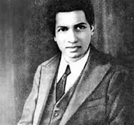

Srinivasa Ramanujan, (born December 22, 1887, Erode, India—died
April 26, 1920, Kumbakonam), Indian mathematician whose
contributions to the theory of numbers include pioneering
discoveries of the properties of the partition function. When he was
15 years old, he obtained a copy of George Shoobridge Carr’s
Synopsis of Elementary Results in Pure and Applied Mathematics, 2
vol. (1880–86). This collection of thousands of theorems, many
presented with only the briefest of proofs and with no material
newer than 1860, aroused his genius. Having verified the results in
Carr’s book, Ramanujan went beyond it, developing his own theorems
and ideas. In 1903 he secured a scholarship to the University of
Madras but lost it the following year because he neglected all other
studies in pursuit of mathematics.
When he was 15 years old, he obtained a copy of George Shoobridge
Carr’s Synopsis of Elementary Results in Pure and Applied
Mathematics, 2 vol. (1880–86). This collection of thousands of
theorems, many presented with only the briefest of proofs and with
no material newer than 1860, aroused his genius. Having verified the
results in Carr’s book, Ramanujan went beyond it, developing his own
theorems and ideas. In 1903 he secured a scholarship to the
University of Madras but lost it the following year because he
neglected all other studies in pursuit of mathematics.
Ramanujan continued his work, without employment and living in the
poorest circumstances. After marrying in 1909 he began a search for
permanent employment that culminated in an interview with a
government official, Ramachandra Rao. Impressed by Ramanujan’s
mathematical prowess, Rao supported his research for a time, but
Ramanujan, unwilling to exist on charity, obtained a clerical post
with the Madras Port Trust.
